The CashierMe application works offline and is linked to a database and an independent control
panel, and the data is updated before entering the application through the application. The user
can make sales
invoices and they can be posted at any time, and the automatic migration feature can be
activated, which
automatically relays the bills. On the main screen, the application reviews the main data and
totals. It also contains
reports of sales invoices, returns and a final report for the point, and it can be printed via
Bluetooth printers.
CashierMe is compatible with tablet devices.
POS Application, SaaS System
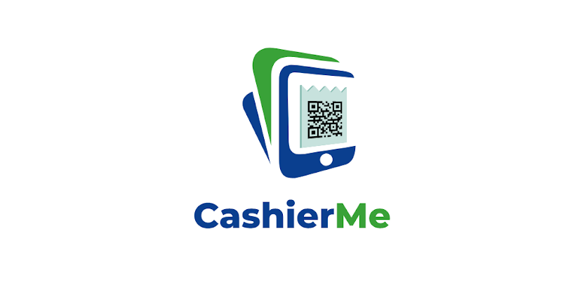
Employees Application, ERP Related
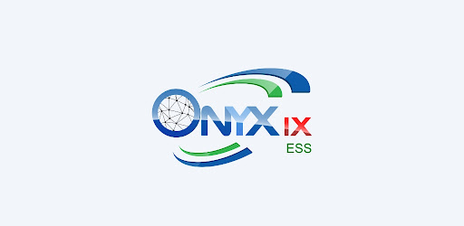
The employee self-service application is linked to the Onyx IX
The application needs all business or service establishments who use Onyx software to serve
their employees.
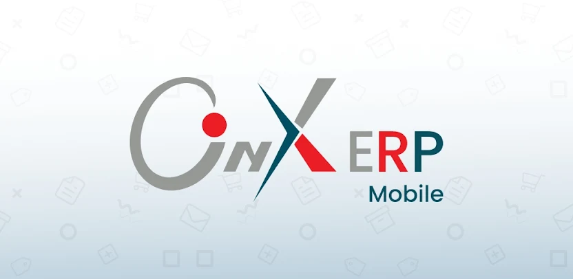
Onyx Pro is an application that is associated with Onyx Pro system whereby
Read targeted Onyx Pro systems, according to reports available indicators and review the
best performance in the items, customers, suppliers and other options.
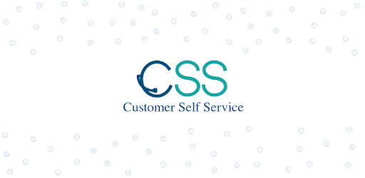
Customer Self Service is a way to communicate for the users of Onyx to facilitate the fast
tasks
that are related to their customers.
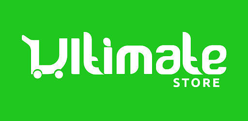
Online shopping with Ultimate Store will provide you to get products delivered at your
doorstep.
By downloading the Ultimate Store free online shopping App on your Android phone, you can
effortlessly browse our massive collection of multiple categories including mobile phones,
fashion wear, electronic devices, videos, accessories and foods. By ordering from Ultimate
Store
you can easily track and cancel your orders anytime.
POS Application, ERP Related
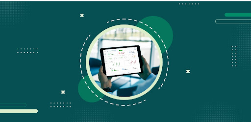
POS Management Systems
Works in various retail stores using bar codes, issue an invoice to the store customers with
the
information on his/her purchased items, monitors the movement of POS during direct sales'
operations, and issue aggregate and detailed reports about POS's sales and payouts according
to
the shift or cashier.
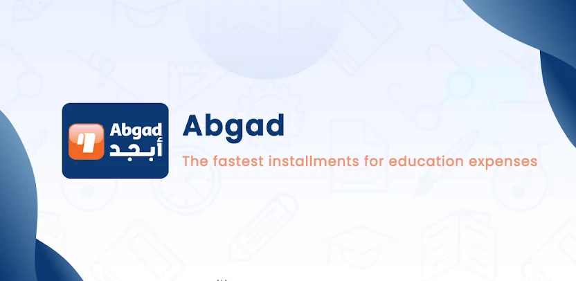
Abgad will help you invest in better education for yourself and your children without
financial
burdens through flexible installment plans. With our same-day approval and easy process, you
can
apply and manage your education financing from anywhere and pay in installments over a
period of
6 to 12 months.
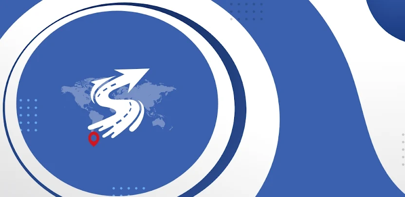
With SAIQ app, your destination is at your fingertips. All you have to do is open the
application and choose the type of car suitable for your trip, and the nearest driver will
reliably head to your location.
A mobile hospital application that facilitates booking appointments with doctors, accessing
diagnosis history, and maintaining patient medical profiles.
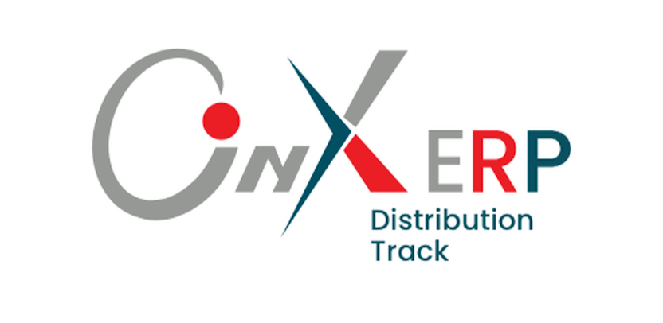
Distribution Tracking App will monitor and track all your distribution movement step by step,
the
App will track progress of each agents distribution plan along with multiple dashboards and
reports.
Waiter Application, ERP Related
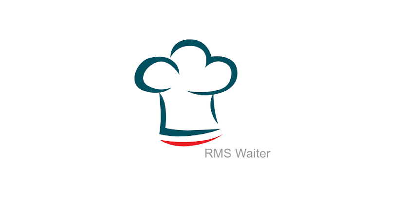
Onyx Restaurant facilitates the client via displaying all types of food photos on mobile or
tablet to choose his order. Then the client order will be received to issue the bill for
follow-up and payment.
Chef Application, ERP Related
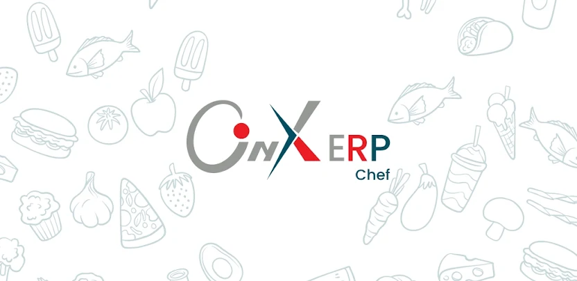
The Chef application allows the chef to follow up on sent orders, work on preparing them, and
can
display previous orders and some statistics.
Restaurant Application, ERP Related
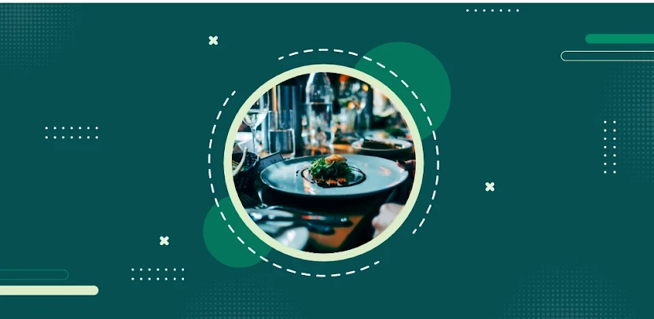
ONYX RMS POS Application comprises modules with specific tasks like chef organization of
orders
menu, organization of client order delivery, and management follow-up of miscellaneous
administrative reports and indicators.
Delivery Application, ERP Related
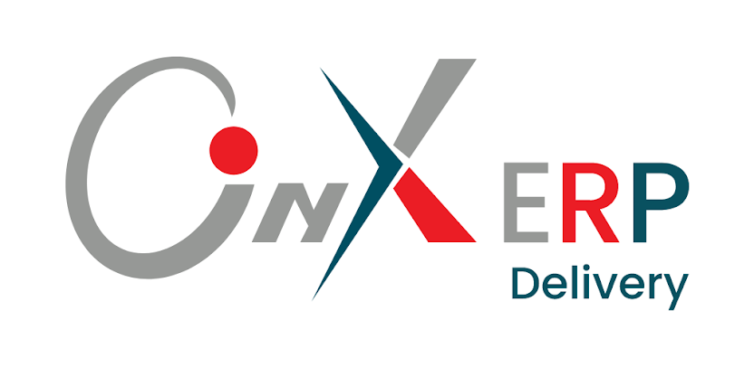
The Onyx Orders Delivery app makes it easy for the delivery man to check the new order
assigned
to him, order details, and customer details as well, and he can change the order status and
there is a record of previous orders to browse.
E-Commerce Application, ERP Related
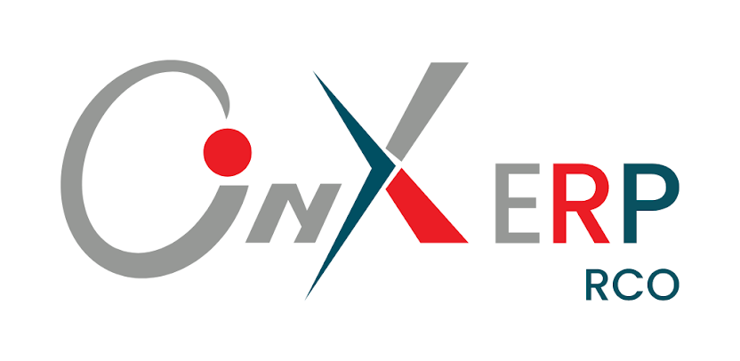
Onyx Customer Restaurant allow you to order food from restaurant to the comfort of your home
and
get products delivered to your doorstep. By downloading the Onyx Customer Restaurant free
online
food ordering app on your Android phone. you can effortlessly browse our massive collection
of
foods. By ordering from Onyx Customer Restaurant free you can easily track and cancel your
orders anytime.
Delivery Application, ERP Related
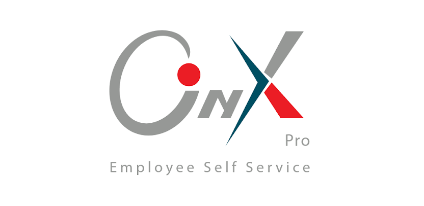
The employee self-service application is linked to the Onyx
The application needs all business or service establishments who use Onyx software to serve
their employees.
Restaurant Menu Application
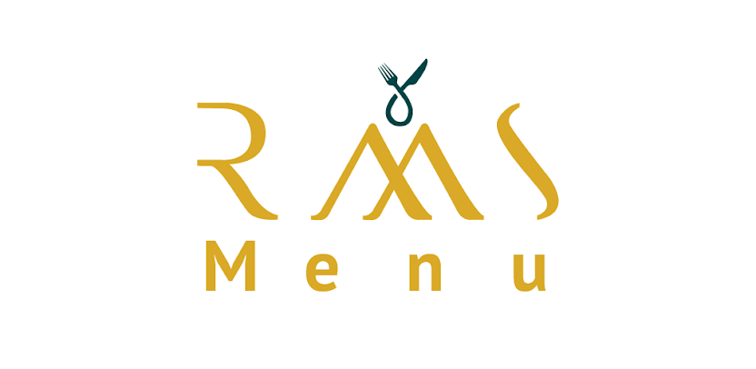
RMS is a digital menu app used by restaurants, cafes & hotels, which allows restauranteurs to
create operational e-menus, increase sales, decrease operational costs, facilitating more
accurate ordering of food.
Customer scan QR code on his table and read menu , choose his order and save it.
Warehouses Management System
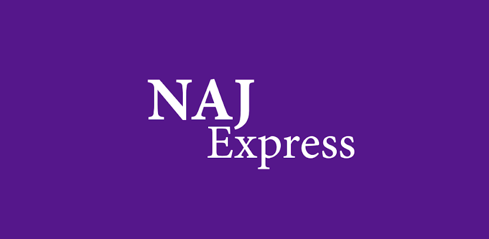
NAJ Express is a comprehensive solution for vehicle shipping and logistics tracking. Designed
to
simplify the entire process, the app provides tools to manage shipments, document key
moments
with photos, and maintain accurate records.
ENZAHOME, the global leader in the field of Turkish furniture, produces distinctive products made
from high-quality Turkish materials with a two-year warranty on all items. It provides several
options to suit everyone, and the prices are competitive compared to the quality and services
provided by the company.
CRM Application, ERP Related
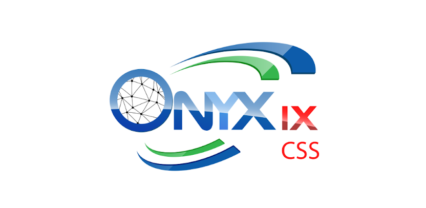
Customer Self Service is a way to communicate for the users of Onyx to facilitate the fast tasks
that are related to their customers.
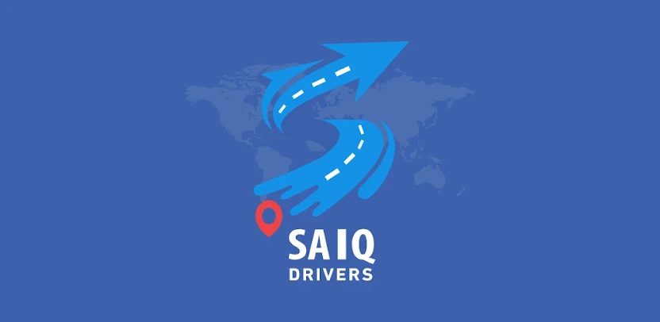
It's related to SAIQ app, but for drivers. It's a map based app that detects the drivers location
in the background and handle the trips cycle from drivers side.